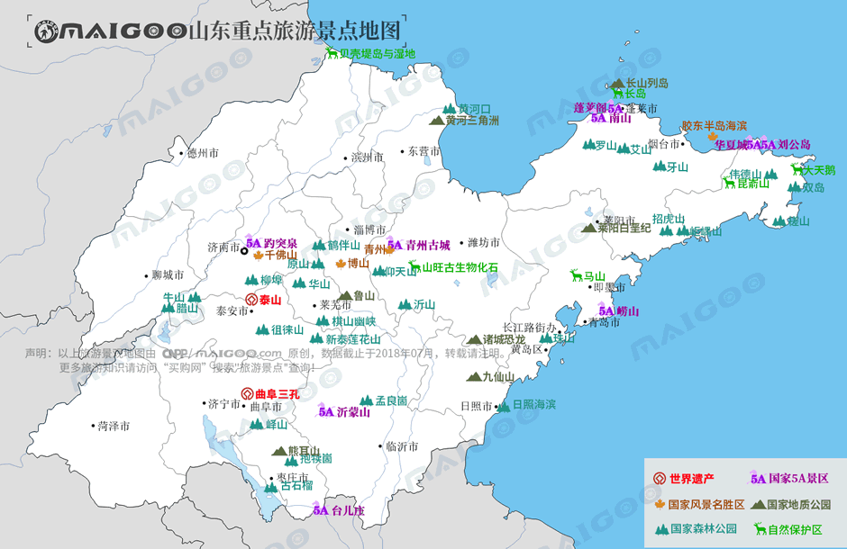

| | | | | |
| - | - | - | - | - |
|<b>别名</b>|齐鲁、东鲁、海右、海岱||<b>著名景点</b>|泰山、崂山、三孔、微山湖、沂蒙山、趵突泉、栈桥、蓬莱阁、等|
|<b>行政区类别</b>|省||<b>机 场</b>|济南遥墙国际机场、青岛流亭国际机场、烟台蓬莱国际机场等|
|<b>所属地区</b>|中国华东||<b>火车站</b>|济南站、青岛站、烟台站等|
|<b>下辖地区</b>|2副省级市15地级市||<b>车牌代码</b>|鲁A—鲁Y|
|<b>电话区号</b>|0530—0539、0543、0546、0631—0635||<b>GDP</b>|72678.2亿元（2017年）|
|<b>邮政区码</b>|250000—277000||<b>人均GDP</b>|72851元（2017年）|
|<b>地理位置</b>|中国东部，黄海、渤海之滨||<b>齐鲁名人</b>|孔子、孟子、墨子、孙子、莫言等|
|<b>面 积</b>|15.58万平方公里||<b>著名大学</b>|山东大学、中国海洋大学等|
|<b>人 口</b>|10005.83万人（2017年末常住人口）||<b>省 花</b>|牡丹|
|<b>方 言</b>|冀鲁官话、中原官话、胶辽官话||<b>省委书记</b>|刘家义|
|<b>气候条件</b>|温带季风气候||<b>省 长</b>|龚正|
| <b>山东生活文化</b> | <b>山东特色文化</b> | <b>山东曲艺文化</b> | <b>山东建筑文化</b> | <b>山东宗教文化</b> |
| - | - | - | - | - |
| <a href="javascript:;" onclick="live(this);">习俗/民俗</a> | <a href="javascript:;" onclick="feature(this);">潍坊风筝</a> | <a href="javascript:;" onclick="art(this);">山东快书</a> | <a href="javascript:;" onclick="building(this);">山东建筑文化</a> | - |
| <a href="javascript:;" onclick="live(this);">方言文化</a> | <a href="javascript:;" onclick="feature(this);">高密剪纸</a> | <a href="javascript:;" onclick="art(this);">胶东大鼓</a> | - | - |
| <a href="javascript:;" onclick="live(this);">节日文化</a> | <a href="javascript:;" onclick="feature(this);">聂家庄泥塑</a> | <a href="javascript:;" onclick="art(this);">山东大鼓</a> | - | - |
| <a href="javascript:;" onclick="live(this);">嫁娶文化</a> | <a href="javascript:;" onclick="feature(this);">扑灰年画</a> | <a href="javascript:;" onclick="art(this);">山东琴书</a> |-|-|
| <a href="javascript:;" onclick="live(this);">饮食文化</a> | - | -|-|-|
| <a href="javascript:;" onclick="live(this);">山东禁忌</a> | - |-| -|-|
## <i class="fa fa-file-text-o"></i>&nbsp;目录（Table of Contents）
+ [I. 总路线图（参考"广东"）](guangdong.html)
+ [II. 景点](#two)
+ [III. 路线规划（参考"广东"）](guangdong.html)
<h2 id="two"><i class="fa fa-star-o"></i>&nbsp;景点</h2>
